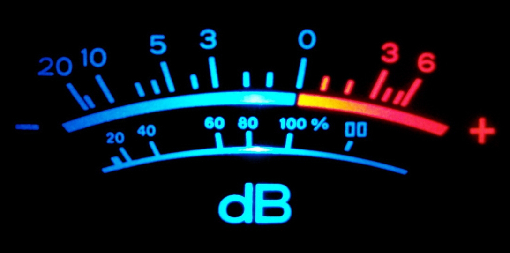

class: center, middle, inverse # Meetup Paris Audio sessions  ## #parisaudio --- class: inverse # Sessions - [#1 @ Mozilla](https://www.meetup.com/fr-FR/Paris-Audio/events/183927232/) - [#2 @ Radio France](https://www.meetup.com/fr-FR/Paris-Audio/events/214035842/) - [#3 @ IRCAM](Session3/index.html) --- class: inverse # Paris Audio #3 @ IRCAM ## Lineup - **Sy Abdoulaye** : MAO pour bootstraper la musique de vos videos de communication - **Alejandro Mantecon Guillen** : Pizzicato JS, une librairie de contrôle et d'effet web audio - **Michel Buffa** (visio) : AmpSim2, un simulateur d'amplificateur de guitare en web audio - **Benjamin Matuszewski** : Waves.js, une librairie d'interaction web audio (+ projet SoundWorks) - **Bruno Verbrugghe** : Dualo Du-Touch, un instrument de musique électronique basé sur un double clavier hexagonal inédit - **Paul Brossier** : Aubio, une librairie d'annotation audio automatique - **Xavier Bonjour** : Solutions de 3D Sound Labs et sur les évolutions de l'audio 3D binaurale - **Présentations libres** : de 30s à 5mn --- class: center, middle, inverse ### Paris Audio #3 #Sy Abdoulaye ##MAO pour bootstraper la musique de vos videos de communication --- class: center, middle, inverse ### Paris Audio #3 #Alejandro Mantecon Guillen ##Pizzicato JS, une librairie de contrôle et d'effet web audio [alemangui.github.io/pizzicato/](https://alemangui.github.io/pizzicato/) --- class: center, middle, inverse ### Paris Audio #3 #Michel Buffa ##AmpSim2, un simulateur d'amplificateur de guitare en web audio [mainline.i3s.unice.fr/AmpSim2/](https://mainline.i3s.unice.fr/AmpSim2/) --- class: center, middle, inverse ### Paris Audio #3 #Benjamin Matuszewski ##Waves.js, une librairie d'interaction web audio + projet Collective SoundWorks [github.com/wavesjs](https://github.com/wavesjs) [github.com/collective-soundworks](https://github.com/collective-soundworks) --- class: center, middle, inverse ### Paris Audio #3 #Bruno Verbrugghe ##Dualo Du-Touch, un instrument de musique électronique basé sur un double clavier hexagonal inédit [dualo.org/fr/du-touch/](https://dualo.org/fr/du-touch/) --- class: center, middle, inverse ### Paris Audio #3 #Paul Brossier ## Aubio, une librairie d'annotation audio automatique [aubio.org](http://aubio.org) --- class: center, middle, inverse ### Paris Audio #3 #Xavier Bonjour ##Solutions de 3D Sound Labs et sur les évolutions de l'audio 3D binaurale [3dsoundlabs.com](http://www.3dsoundlabs.com/) --- class: center, middle, inverse ### Paris Audio #3 ## Présentations libres ##de 30s à 5mn --- class: center, middle, inverse ### Paris Audio #3 #A. Péro ##Rencontres du 2e sous-sol